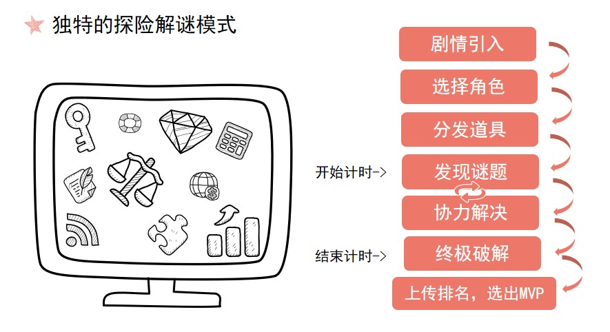

寻趣Goplo 游戏介绍
什么是“寻趣(GOPLO)-未来赋能游戏”？
寻趣-未来赋能游戏是我们专为青少年设计的一系列STEAM教育多人线下解谜游戏的集合。它们是基于共同的元素、设定、故事和角色所设计的，其内容共同构成了一个多元架空的“寻趣宇宙”。
其中《寻趣系列之无人岛历险记》是我们的第一部作品，这是一个面向小学四到六年级以及初中生的游戏脚本。讲述了2020年的某一天，天才少年组织“未来童盟”的成员们一同调查未来市发生的某次神秘集体失踪事件的故事。
这个游戏该怎么玩？
寻趣采用了独特的探索+解谜类模式，玩家需要在给定的空间内进行探索，通过发现道具上的信息，以及与特定的机关进行交互来破解谜题，进入下一关卡。通过全部关卡的时间将被计入排行榜，游戏结束后，我们将根据所有玩家在游戏中的表现选出一位MVP，并给予相应的奖励。
如何在游戏中获得全方位知识？
我们的游戏脚本的难度是阶梯式的，不同难度等级的游戏脚本将会面向不同年龄段的受众开放。在设计游戏前，我们会对受众群体做深入的调查和分析，例如在《无人岛历险记》中，我们对深圳市小学四到六年级的教材和辅导书内容进行了分类和提纯，最终结合课本内容和课外知识策划所有游戏关卡，从而确保每一个孩子都能够在丰富的应用场景中获得全方位的STEAM教育。
如何了解更多关于游戏的内容？
您可以点击这里了解更多关于我们的第一个作品《无人岛历险记》的内容。
小机器人的作用是什么？
小机器人的引入是为了提升游戏的可玩性和沉浸感，有时我们无法保证真人主持或者NPC能够很好地将玩家代入进游戏中并发挥他们应有的引导作用。目前，我们正在尝试用智能机器人代替人力成为寻趣游戏的HOST，或作为游戏中的NPC。您可以点击这里了解更多关于小机器人的信息。